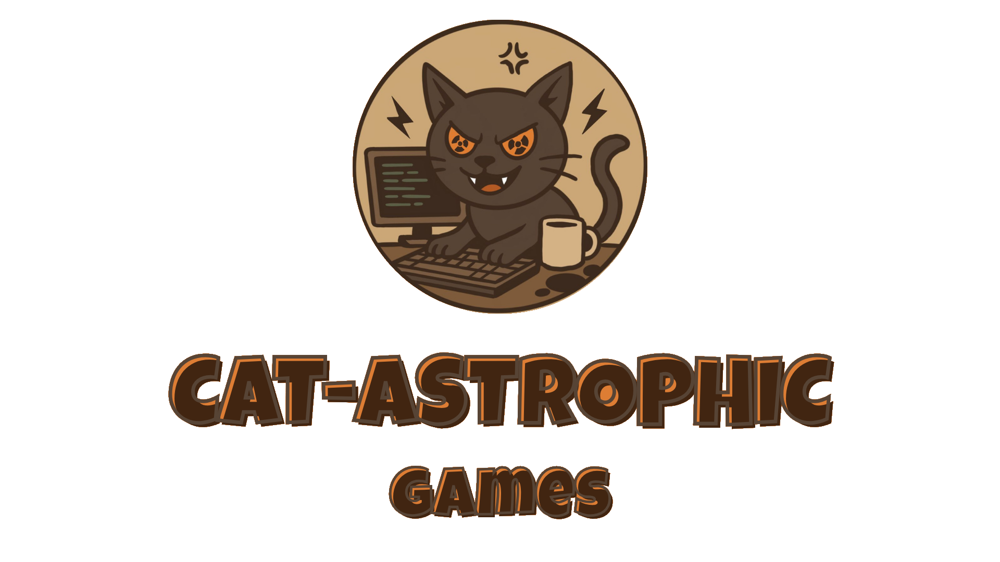

Sobre Nosotros
Juan
Rol: Programador
Blanca
Rol: Programadora, Community Manager
Ariadna
Rol: Programadora, Diseñadora
David
Rol: Programador, Diseñador
Créditos
Desarrollado por el equipo de Cat-astrophic Games, 2025.
Wally like an Egyptian
Un breve texto aquí describiendo la historia, jugabilidad o mecánica principal del juego. (Ejemplo: "Un juego de aventuras retro donde un gato hacker lucha contra errores digitales").
Noticias y Avances
¡Tenemos Identidad Visual!
Diseñé el Logo del Estudio, así como el nombre de este. ¿Qué os parece? @Cat-astrophic Games 😸
¡Tenemos Redes Sociales! ¿A qué esperas para seguirnos?
¡El nombre de nuestro juego será "Wally like an Egyoptian"! Esto se debe a la inspiración de la canción
"Walk like an Egyptian" y a Wally, que será un NPC clave en la historia del juego.
Contacto
Síguenos en: